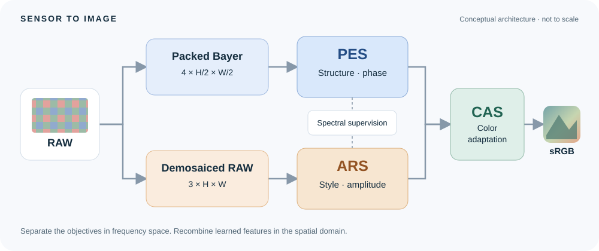

PES
Phase Enhance Subnet extracts detail from packed Bayer input, with phase supervision and spatial-frequency refinement.
AAAI 2024 / Neural image signal processing
1 Hefei Institutes of Physical Science, Chinese Academy of Sciences · 2 University of Science and Technology of China · 3 Horizon Robotics · 4 Tencent Technology · 5 Nanyang Technological University
* Equal contribution · † Corresponding authors

01 / Method
RAW-to-sRGB processing must recover fine spatial details as well as reproduce color. FourierISP uses the complementary information in Fourier phase and amplitude to specialize these learning objectives before combining the representations in an image reconstruction network.
Phase Enhance Subnet extracts detail from packed Bayer input, with phase supervision and spatial-frequency refinement.
Amplitude Refine Subnet estimates color-related information from demosaiced input, using amplitude supervision.
Color Adaptation Subnet combines structure and color features through multiscale adaptation to reconstruct sRGB.
Phase and amplitude are useful complementary priors, not perfectly independent physical quantities.
02 / Published evaluation
Original AAAI 2024 results. The aligned ZRR protocol compensates for ground-truth misalignment; MAI evaluates transfer after one epoch of fine-tuning.
| Protocol | PSNR ↑ | SSIM ↑ | MS-SSIM ↑ | LPIPS ↓ |
|---|---|---|---|---|
| ZRR | 21.65 | 0.7546 | 0.8660 | 0.1820 |
| ZRR (aligned GT) | 23.93 | 0.8744 | 0.9461 | 0.1240 |
| MAI | 24.99 | 0.8820 | 0.9594 | 0.0850 |
Source: Table 1, He et al., AAAI 2024. These results have not been remeasured with the modern package.
03 / Open implementation
A standalone PyTorch package that preserves the active computation of the published architecture. The original BasicSR code remains available alongside it.
git clone https://github.com/alexhe101/FourierISP.git
cd FourierISP
python -m pip install -e './modern[dev]'
python -m pytest modern/tests -q -rs04 / Reference
Please cite the original AAAI 2024 paper when using FourierISP.
@inproceedings{he2024fourierisp,
title = {Enhancing RAW-to-sRGB with Decoupled Style Structure in Fourier Domain},
author = {He, Xuanhua and Hu, Tao and Wang, Guoli and Wang, Zejin and
Wang, Run and Zhang, Qian and Yan, Keyu and Chen, Ziyi and
Li, Rui and Xie, Chengjun and Zhang, Jie and Zhou, Man},
booktitle = {Proceedings of the AAAI Conference on Artificial Intelligence},
volume = {38},
number = {3},
pages = {2130--2138},
year = {2024},
doi = {10.1609/aaai.v38i3.27985}
}